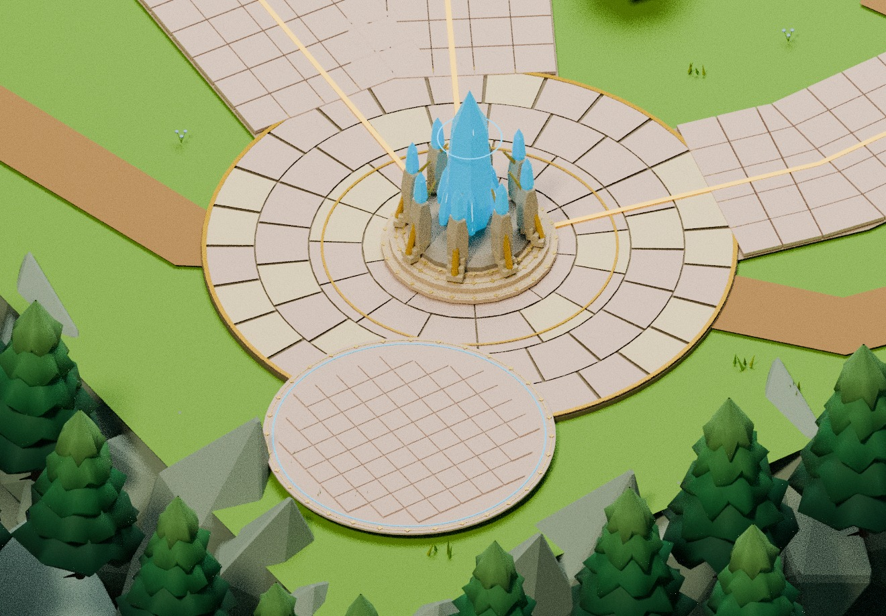
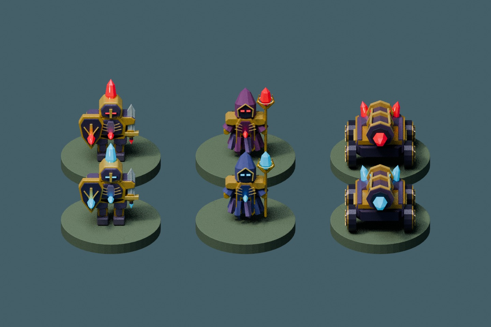

ИЗ НАСТОЯЩЕЙ 3D-СЦЕНЫ
01 / Общий вид долины ↗Лес, руины и обитатели долины
Рендеры Blender Cycles из исходников, включённых в Unity-проект. Это не скриншоты Unity.
 02 / Лес и древняя архитектура ↗
02 / Лес и древняя архитектура ↗ 03 / Нейтральные существа и боссы ↗
03 / Нейтральные существа и боссы ↗
04 / Фонтан и нексус ↗
05 / Миньоны обеих сторон ↗